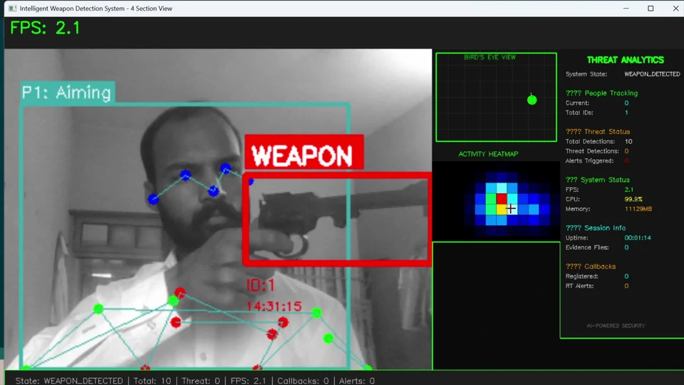
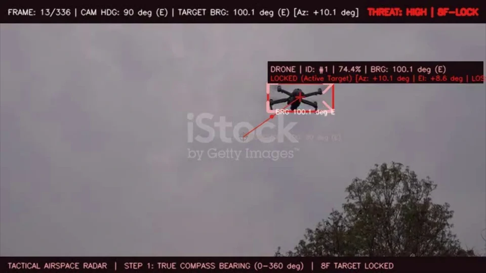
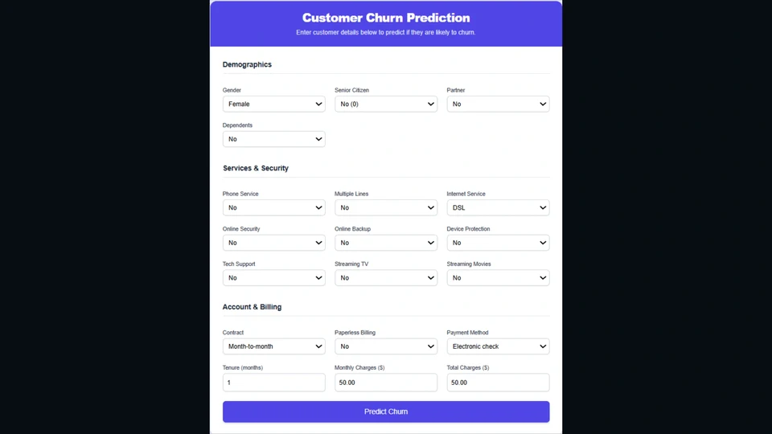

01
Useful signals
from images and video.
Detection, tracking, and pose-analysis components scoped to your footage, camera conditions, and inference budget.
Explore computer vision ↗INDEPENDENT AI ENGINEERING STUDIO
AI implementation for software teams, agencies, and operations teams. Turn video, business data, and documentation into a focused tool your team can evaluate.
01 / WHAT WE BUILD
One focused use case is a better beginning than AI everywhere. We help define it, build it, and evaluate how well it works.
Detection, tracking, and pose-analysis components scoped to your footage, camera conditions, and inference budget.
Explore computer vision ↗RAG assistants for product documentation, internal SOPs, and support content. Relevant sources, clear citations, and a fallback when the answer isn't there.
Explore a knowledge assistant ↗Connect the steps between an incoming request and a useful draft. AI can classify, extract, and prepare; your team approves important actions.
Discuss an automation ↗Predictive models for structured business data, with a reproducible preprocessing pipeline and explanations your team can inspect.
Explore applied ML ↗SELECTED WORK
A closer look at the founder’s personal and open-source AI projects. View all 10 projects ↗

COMPUTER VISION
An urban monitoring prototype connecting visual detections, incident assessment, and emergency response coordination.
Explore project ↗
COMPUTER VISION
A computer vision pipeline for detecting and tracking drones, with a dashboard for telemetry and recorded evidence.
Explore project ↗
APPLIED ML
An end-to-end telecom churn application, from preprocessing and model training to a FastAPI prediction interface.
Explore project ↗03 / HOW WE WORK
A focused pilot gives you something to evaluate before committing to a wider rollout.
Understand the workflow, available data, and what a successful result would look like.
Define deliverables, exclusions, evaluation criteria, cost, and timeline before building.
Review a working pilot together. Test real scenarios, edge cases, and failure handling.
Receive the agreed source code, documentation, and a clear plan for hosting and maintenance.
WHERE WE CAN HELP
Choose the workflow that is closest to yours. We will assess the data and integration needs before recommending a pilot.
A retrieval assistant, prediction endpoint, or visual-analysis component connected to your application.
Explore the capabilities ↗A defined AI component for a client project, with communication, ownership, and handover agreed upfront.
Discuss a partnership ↗Explore a bounded workflow over your documents, camera footage, or structured business data.
Choose a starting point ↗A GOOD PLACE TO START